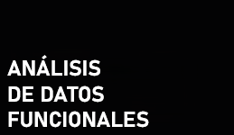
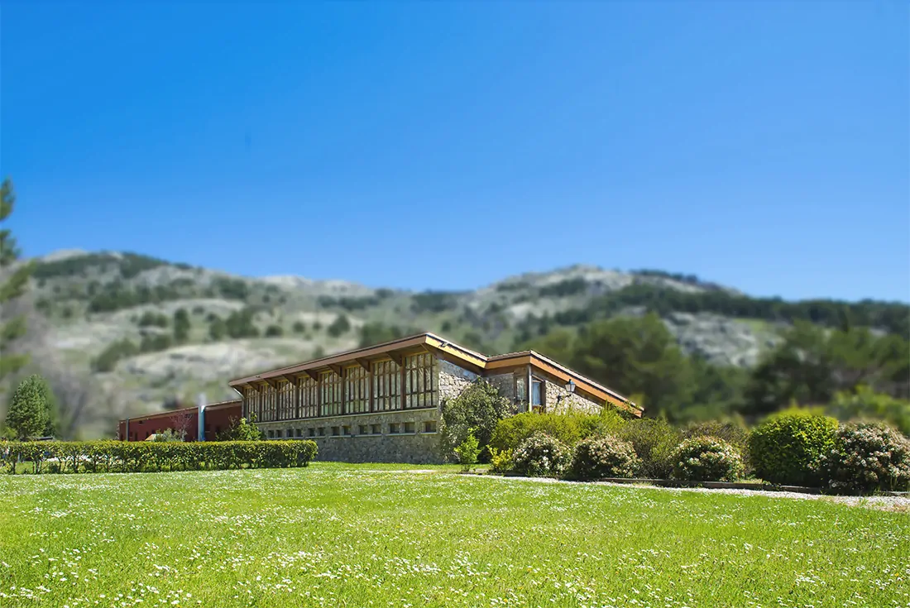
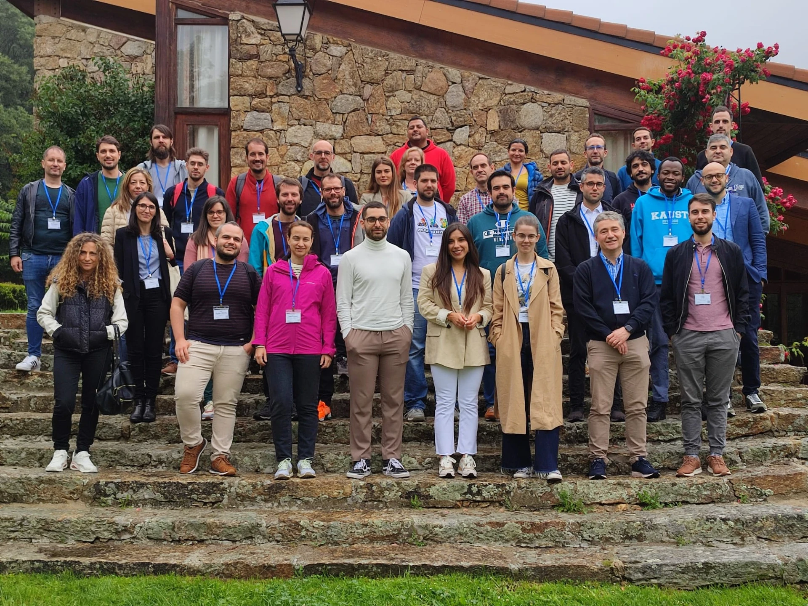
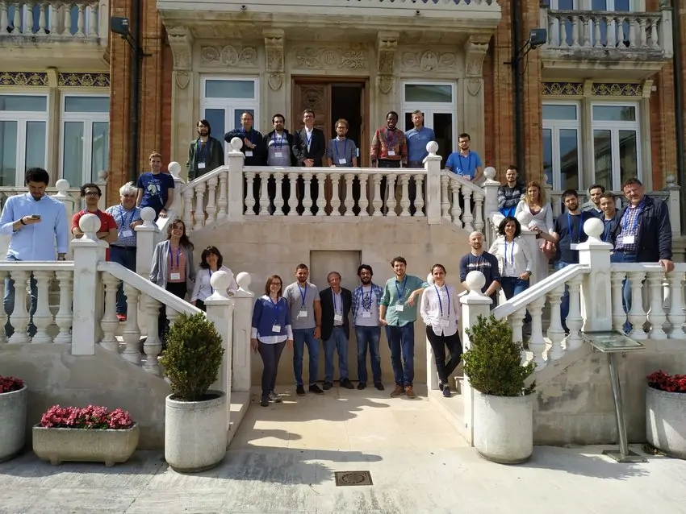
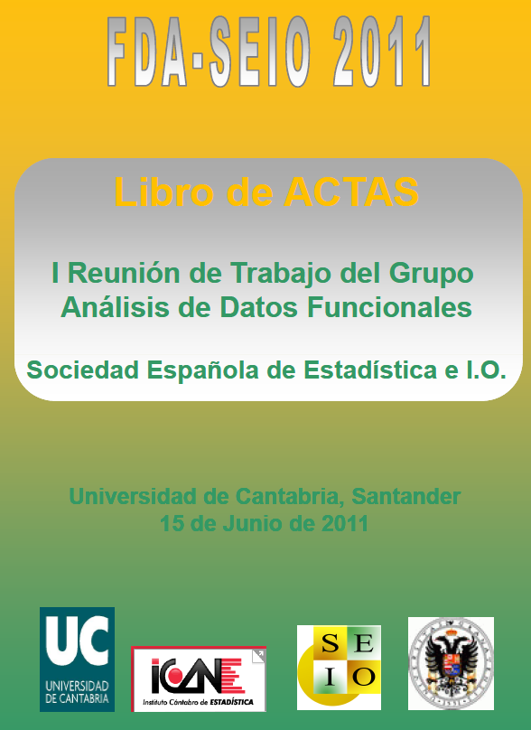

Sobre el grupo
Quiénes somos
Cómo unirse
Contacto
Eventos
Miembros
Eventos
Congresos de la SEIO, Talleres y Reuniones de Trabajo
Categories
All
(8)
Joint Workshop
(2)
Meeting
(2)
SEIO
(1)
Workshop
(3)
Congreso SEIO Lleida 2025
SEIO
Jun 10, 2025

II Joint Workshop of Functional Data Analysis and Non Parametric Statistics
Joint Workshop
Sep 10, 2024

I Joint Workshop of Functional Data Analysis and Non Parametric Statistics
Joint Workshop
Jun 6, 2023

III International Workshop on Advances in Functional Data Analysis
Workshop
Jun 15, 2019
II International Workshop on Advances in Functional Data Analysis
Workshop
Jun 15, 2017
I International Workshop on Advances in Functional Data Analysis
Workshop
Jun 15, 2015
IV Reunión de Trabajo del Grupo Análisis de Datos Funcionales
Meeting
Jun 17, 2014

I Reunión de Trabajo del Grupo Análisis de Datos Funcionales
Meeting
Jun 15, 2011
No matching items